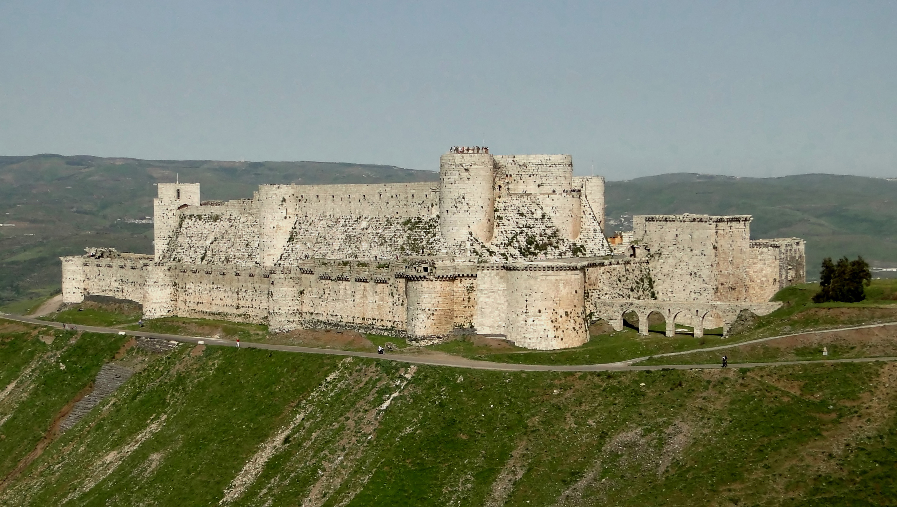
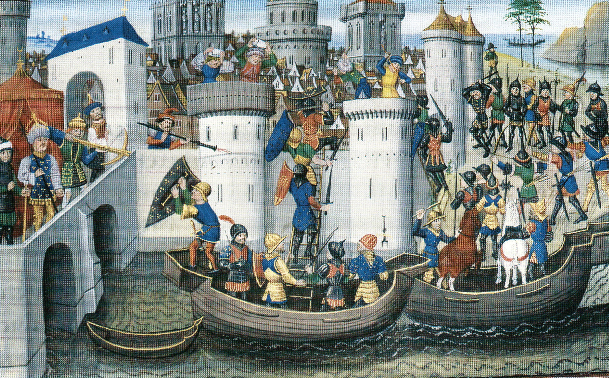
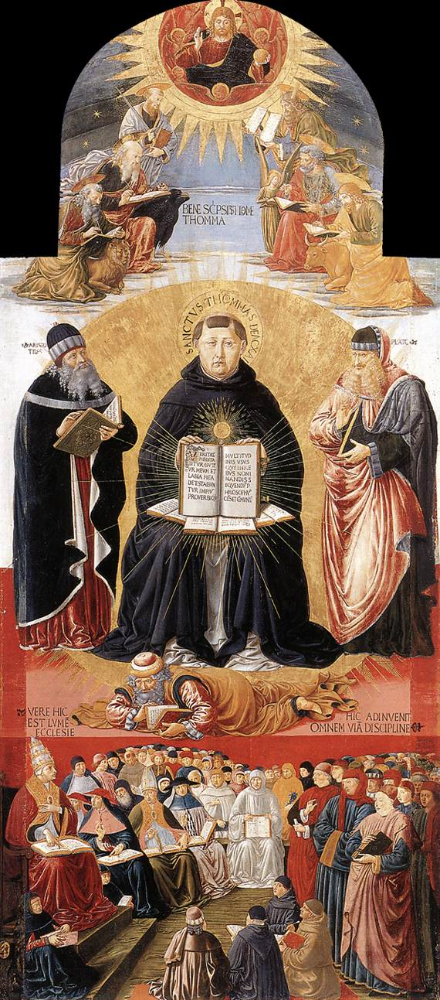

1. Εισαγωγή: Το Απόγειο και οι Σκιές της Δυτικής Χριστιανοσύνης
Στο δέκατο μάθημα της σειράς, η Μαρία Ευθυμίου αναλύει τη συναρπαστική, εκρηκτική και αντιφατική εποχή του ώριμου Μεσαίωνα (11ος–13ος αιώνας). Η Δυτική Ευρώπη, έχοντας πλέον ξεπεράσει το σοκ των πρώτων βαρβαρικών αιώνων και γνωρίζοντας αλματώδη δημογραφική και αγροτική ανάκαμψη, εκρήγνυται προς τα έξω: κατακλύζει την Ανατολή με σιδερόφρακτους ιππότες, ισοπεδώνει τη χριστιανική Κωνσταντινούπολη, καταδιώκει τις εσωτερικές αιρέσεις με την Ιερά Εξέταση, αλλά ταυτόχρονα δημιουργεί τα πρώτα Πανεπιστήμια και συνθέτει τη βαθυστόχαστη σχολαστική φιλοσοφία.
2. Οι Σταυροφορίες (1096–1291): Δημογραφική Έκρηξη & «Deus Vult!»
Πριν από το ιστορικό κάλεσμα για τις Σταυροφορίες, η Δυτική Ευρώπη μεταμορφώθηκε από μια σειρά τεχνολογικών καινοτομιών στη γεωργία: το βαρύ τροχοφόρο άροτρο (*carruca*), η τριετής αμειψισπορά και το σκληρό περιλαίμιο αλόγων εκτίναξαν την αγροτική παραγωγή. Η επακόλουθη δημογραφική έκρηξη γέννησε μια τεράστια μάζα ανήσυχων νεαρών ευγενών, οι οποίοι, αποκλεισμένοι από την κληρονομιά λόγω της πρωτοτοκίας, στρέφονταν στη ληστεία και στις ένοπλες τοπικές συγκρούσεις.
Στις 27 Νοεμβρίου 1095, στη Σύνοδο του Κλερμόν στη Γαλλία, ο Πάπας Ουρβανός Β΄ εκφώνησε τον πιο εμπρηστικό λόγο του Μεσαίωνα. Κάλεσε τους χριστιανούς ιππότες να αφήσουν τις εμφύλιες σφαγές και να εκστρατεύσουν στην Ανατολή για να ελευθερώσουν τον Πανάγιο Τάφο, υποσχόμενος άφεση όλων των αμαρτιών τους. Το πλήθος ξέσπασε στην κραυγή: «Deus vult!» (Ο Θεός το θέλει!).
Η Μαρία Ευθυμίου εξηγεί τον βαθύ κοινωνιολογικό μηχανισμό των Σταυροφοριών:
Η φεουδαρχική Ευρώπη αιμορραγούσε από τους αδίστακτους ιππότες της. Ο Πάπας βρήκε την ιδανική βαλβίδα αποσυμπίεσης: εξήγαγε τη βία της Ευρώπης στην Ανατολή! Είπε στους πολεμιστές: «Αντί να αλληλοσφάζεστε στη Γαλλία και στη Γερμανία και να πηγαίνετε στην κόλαση, πηγαίνετε στην Ανατολή να πολεμήσετε τους απίστους και θα μπείτε απευθείας στον Παράδεισο!».
Στις 15 Ιουλίου 1099, η Α΄ Σταυροφορία κατέλαβε την Ιερουσαλήμ. Η πριγκίπισσα Άννα Κομνηνή στην Αλεξιάδα κατέγραψε το σοκ των Βυζαντινών όταν αντίκρισαν τους σιδερόφρακτους ιππότες: «μια ολόκληρη Δύση να ξεριζώνεται και να χύνεται πάνω στην Ανατολή, υπερόπτες, ακατάσχετοι, φοβεροί, με μάτια που πετούσαν σπίθες!». Ακολούθησε ανείπωτο λουτρό αίματος στην Ιερουσαλήμ, όπου οι σταυροφόροι έσφαξαν σχεδόν ολόκληρο τον μουσουλμανικό και εβραϊκό πληθυσμό. Ο ηγέτης τους, Γοδεφρείδος του Μπουιγιόν, αρνήθηκε να στεφθεί βασιλιάς στην πόλη του Χριστού και έλαβε τον τίτλο Advocatus Sancti Sepulchri (Υπερασπιστής του Παναγίου Τάφου).
Το παραλήρημα κορυφώθηκε με την τραγική Σταυροφορία των Παιδιών (1212): χιλιάδες παιδιά από τη Γαλλία και τη Γερμανία κατέβηκαν στη Μασσαλία πιστεύοντας ότι η παιδική αθωότητα θα άνοιγε τη θάλασσα. Τελικά, αδίστακτοι έμποροι τα επιβίβασαν σε καράβια και τα πούλησαν όλα ως δούλους στα σκλαβοπάζαρα της Αιγύπτου!
3. Τα Στρατιωτικά Τάγματα & το Φρούριο Krak des Chevaliers
Για την υπεράσπιση των σταυροφορικών κρατιδίων ιδρύθηκαν τα μοναχο-ιπποτικά τάγματα: οι Ναΐτες (Knights Templar), οι Ιωαννίτες (Hospitallers) και οι Τεύτονες. Συνδύαζαν τη μοναστική πειθαρχία με την πολεμική δεινότητα, ενώ οι Ναΐτες ανέπτυξαν και το πρώτο πανευρωπαϊκό τραπεζικό δίκτυο πιστώσεων.

Το 1187, ο χαρισματικός Κούρδος σουλτάνος Σαλαντίν (Saladin) συνέτριψε τους σταυροφόρους στα Κέρατα του Χαττίν και ανακατέλαβε την Ιερουσαλήμ, επιδεικνύοντας σπάνια μεγαλοψυχία: σε αντίθεση με τη σφαγή του 1099, επέτρεψε στους κατοίκους να εξαγοράσουν την ελευθερία τους χωρίς να χυθεί αίμα.
4. Η Τραγική Δ΄ Σταυροφορία και η Άλωση της Κωνσταντινούπολης (1204)
Η πιο ολέθρια στιγμή της μεσαιωνικής ιστορίας συντελέστηκε το 1204. Η Δ΄ Σταυροφορία, αντί να επιτεθεί στην Αίγυπτο, κατευθύνθηκε προς την Κωνσταντινούπολη εξαιτίας των οικονομικών απαιτήσεων της Βενετίας και των δολοπλοκιών του τυφλού υπέργηρου Δόγη Ενρίκο Δάνδολου και του Βυζαντινού πρίγκιπα Αλέξιου Δ΄ Αγγέλου.

Στις 13 Απριλίου 1204, οι σταυροφόροι άλωσαν την πλουσιότερη πόλη της χριστιανοσύνης. Ο αυτόπτης μάρτυρας ιστορικός Νικήτας Χωνιάτης περιγράφει σκηνές ανείπωτης βαρβαρότητας: οι σταυροφόροι έκαψαν βιβλιοθήκες, σύλησαν τάφους αυτοκρατόρων, **έλιωσαν σε καμίνια ανεκτίμητα αρχαιοελληνικά χάλκινα αγάλματα** (όπως την εννιαμετρη Αθηνά Πρόμαχο του Φειδία και τον κολοσσιαίο Ηρακλή του Λυσίππου) για να κόψουν χάλκινα νομίσματα, έκλεψαν τα τέσσερα χάλκινα άλογα του Ιπποδρόμου και έβαλαν μια Γαλλίδα πόρνη να χορεύει στον πατριαρχικό θρόνο της Αγίας Σοφίας τραγουδώντας άσεμνα άσματα!
5. Αιρέσεις & η Ιερά Εξέταση: Η Σταυροφορία κατά των Καθαρών
Στο εσωτερικό της Δυτικής Ευρώπης, η κατακραυγή για τη διαφθορά της Εκκλησίας γέννησε τις μεγάλες μεσαιωνικές αιρέσεις. Στη Νότια Γαλλία εμφανίστηκαν οι Καθαροί (Αλβιγηνοί), οι οποίοι πίστευαν σε έναν απόλυτο δυϊσμό: ο υλικός κόσμος είναι δημιούργημα του Σατανά, ενώ ο πνευματικός του Καλού Θεού. Απέρριπταν τον γάμο, την περιουσία, τον πόλεμο και την παπική ιεραρχία.
Ο **Πάπας Ιννοκέντιος Γ΄** εξαπέλυσε εναντίον τους τη **Σταυροφορία των Αλβιγηνών (1209–1229)**. Στην άλωση της Μπεζιέ (1209), όταν οι στρατιώτες ρώτησαν πώς θα ξεχωρίσουν τους πιστούς από τους αιρετικούς, ο παπικός λεγάτος Αρνό Αμαλρίκ έδωσε τη διαβόητη εντολή: «Caedite eos! Novit enim Dominus qui sunt eius» (Σκοτώστε τους όλους! Ο Θεός θα ξεχωρίσει τους δικούς Του!).
Το 1231, ο Πάπας Γρηγόριος Θ΄ ίδρυσε την **Παπική Ιερά Εξέταση (*Inquisitio*)**, αναθέτοντας την ανάκριση και καταστολή των αιρετικών στο Τάγμα των **Δομινικανών** μοναχών (*Domini canes* = τα τσοπανόσκυλα του Κυρίου).
6. Ο Σχολαστικισμός και τα Πανεπιστήμια: Θωμάς ο Ακινάτης
Την ίδια ακριβώς περίοδο, η Δυτική Ευρώπη βίωνε μια ασύλληπτη πνευματική αναγέννηση με την ίδρυση των πρώτων **Πανεπιστημίων (Μπολόνια 1088, Παρίσι/Σορβόννη 1150, Οξφόρδη 1167)**. Η μετάφραση των έργων του **Αριστοτέλη** από τα αραβικά στα λατινικά μέσω Ισπανίας προκάλεσε σεισμό στα θεμέλια της δυτικής σκέψης.

Ο κορυφαίος στοχαστής του Μεσαίωνα, ο Θωμάς ο Ακινάτης (1225–1274), με το μνημειώδες έργο του Summa Theologiae, συμφιλίωσε την πίστη με τον ορθολογισμό: «Gratia non tollit naturam, sed perficit» (Η θεία χάρη δεν καταργεί τη φύση και τη λογική, αλλά την τελειοποιεί!). Διατύπωσε τις **Πέντε Οδούς (*Quinque Viae*)**, αποδεικνύοντας τη θεία ύπαρξη μέσω της φιλοσοφικής παρατήρησης της φύσης.
7. Ετυμολογικό Εργαστήρι: Οι Λέξεις του Ώριμου Μεσαίωνα
- Σταυροφορία (Crusade): Από το λατινικό crux (σταυρός). Οι μαχητές ονομάζονταν crucesignati («σημαδεμένοι με σταυρό»), επειδή έραβαν κόκκινο υφασμάτινο σταυρό στον ώμο τους.
- Ιερά Εξέταση (Inquisition): Από το λατινικό inquirere (ερευνώ βαθιά, ανακρίνω δικαστικά).
- Πανεπιστήμιο (Universitas): Στα μεσαιωνικά νομικά κείμενα σήμαινε τη συντεχνία, το νομικό πρόσωπο των καθηγητών και των φοιτητών (universitas magistrorum et scholarium).
- Σχολαστικισμός: Από το ελληνικό σχολή / σχολαστικός. Η μέθοδος αυστηρής λογικής συζήτησης και εξέτασης αντιτιθέμενων απόψεων (quaestio disputata).
- Καθαροί (Cathars): Από το ελληνικό επίθετο καθαρός. Εκείνοι που ισχυρίζονταν ότι διατηρούν την απόλυτη αγνότητα της πίστης μακριά από τη μόλυνση της ύλης.
- Albigenses (Αλβιγηνοί): Από την πόλη Αλμπί (Albi) της Νότιας Γαλλίας, κύριο κέντρο των Καθαρών.